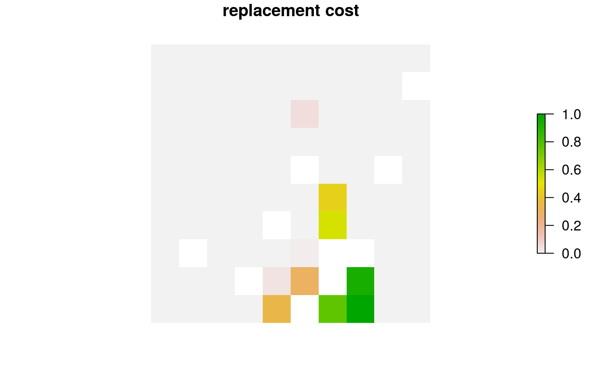
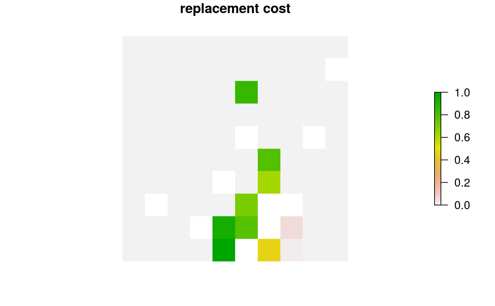
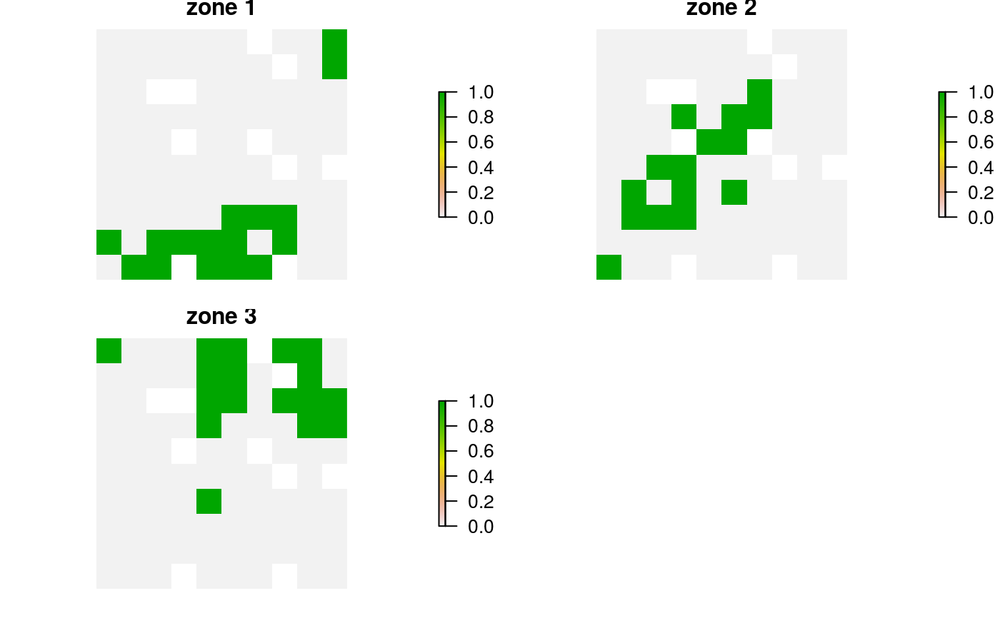
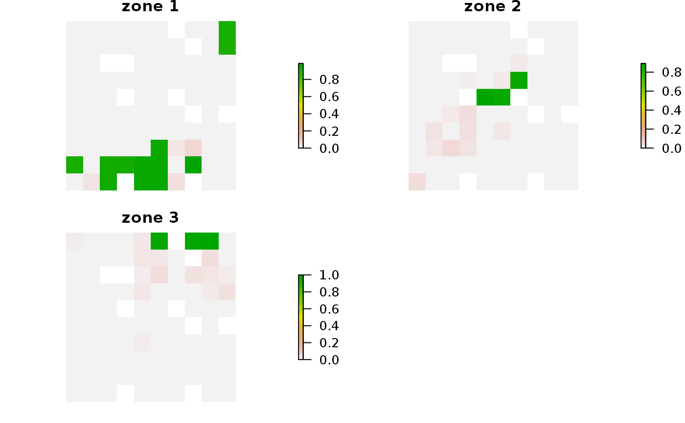

Calculate irreplaceability scores for planning units selected in a solution using the replacement cost method (Cabeza and Moilanen 2006).
# S4 method for ConservationProblem,numeric replacement_cost(x, solution, rescale, run_checks, force, threads, ...) # S4 method for ConservationProblem,matrix replacement_cost(x, solution, rescale, run_checks, force, threads, ...) # S4 method for ConservationProblem,data.frame replacement_cost(x, solution, rescale, run_checks, force, threads, ...) # S4 method for ConservationProblem,Spatial replacement_cost(x, solution, rescale, run_checks, force, threads, ...) # S4 method for ConservationProblem,Raster replacement_cost(x, solution, rescale, run_checks, force, threads, ...)
Arguments
| x |
|
|---|---|
| solution |
|
| rescale |
|
| run_checks |
|
| force |
|
| threads |
|
| ... | not used. |
Value
A numeric, matrix,
RasterLayer-class, or
Spatial-class object containing the replacement costs
for each planning unit in the solution.
Details
Using this method, the score for each planning unit is calculated
as the difference in the objective value of a solution when each planning
selected planning units locked in. In other words, the replacement cost
metric corresponds to change in solution quality incurred if a given
planning unit cannot be acquired when implementing the solution and the
next best planning unit (or set of planning units) will need to be
considered instead. Thus planning units with a higher score are more
irreplaceable. For example, when using the minimum set objective function
(add_min_set_objective), the replacement cost scores
correspond to the additional costs needed to meet targets when each
planning unit is locked out. When using the maximum utility
objective function (add_max_utility_objective, the
replacement cost scores correspond to the reduction in the utility when
each planning unit is locked out. Infinite values mean that no feasible
solution exists when planning units are locked out---they are
absolutely essential for obtaining a solution (e.g. they contain rare
species that are not found in any other planning units or were locked in).
Zeros values mean that planning units can swapped with other planning units
and this will have no effect on the performance of the solution at all
(e.g. because they were only selected due to spatial fragmentation
penalties). Since these calculations can take a long time to complete, we
recommend calculating these scores without additional penalties (e.g.
add_boundary_penalties) or constraints (e.g.
link{add_contiguity_constraints}). They can be sped up further by
using proportion-type decisions when calculating the scores (see below for
an example).
Note that all arguments to solution must correspond
to the planning unit data in the argument to x in terms
of data representation, dimensionality, and spatial attributes (if
applicable). This means that if the planning unit data in x
is a numeric vector then the argument to solution must be a
numeric vector with the same number of elements, if the planning
unit data in x is a RasterLayer-class then the
argument to solution must also be a
RasterLayer-class with the same number of rows and
columns and the same resolution, extent, and coordinate reference system,
if the planning unit data in x is a Spatial-class
object then the argument to solution must also be a
Spatial-class object and have the same number of spatial
features (e.g. polygons) and have the same coordinate reference system,
if the planning units in x are a data.frame then the
argument to solution must also be a data.frame with each
column correspond to a different zone and each row correspond to
a different planning unit, and values correspond to the allocations
(e.g. values of zero or one).
Solutions must have planning unit statuses set to missing (NA)
values for planning units that have missing (NA) cost data. For
problems with multiple zones, this means that planning units must have
missing (NA) allocation values in zones where they have missing
(NA) cost data. In other words, planning units that have missing
(NA) cost values in x should always have a missing
(NA) value the argument to solution. If an argument is
supplied to
solution where this is not the case, then an error will be thrown.
References
Cabeza M and Moilanen (2006) Replacement cost: A practical measure of site value for cost-effective reserve planning. Biological Conservation, 132: 336--342.
See also
Examples
# seed seed for reproducibility set.seed(600) # load data data(sim_pu_raster, sim_features, sim_pu_zones_stack, sim_features_zones) # create minimal problem with binary decisions p1 <- problem(sim_pu_raster, sim_features) %>% add_min_set_objective() %>% add_relative_targets(0.1) %>% add_binary_decisions() %>% add_default_solver(gap = 0, verbose = FALSE)#> class : RasterLayer #> dimensions : 10, 10, 100 (nrow, ncol, ncell) #> resolution : 0.1, 0.1 (x, y) #> extent : 0, 1, 0, 1 (xmin, xmax, ymin, ymax) #> crs : NA #> source : memory #> names : layer #> values : 0, 1 (min, max) #># calculate irreplaceability scores rc1 <- replacement_cost(p1, s1) # print irreplaceability scores print(rc1)#> class : RasterLayer #> dimensions : 10, 10, 100 (nrow, ncol, ncell) #> resolution : 0.1, 0.1 (x, y) #> extent : 0, 1, 0, 1 (xmin, xmax, ymin, ymax) #> crs : NA #> source : memory #> names : layer #> values : 0, 1 (min, max) #># since replacement cost scores can take a long time to calculate with # binary decisions, we can calculate them using proportion-type # decision variables. Note we are still calculating the scores for our # previous solution (s1), we are just using a different optimization # problem when calculating the scores. p2 <- problem(sim_pu_raster, sim_features) %>% add_min_set_objective() %>% add_relative_targets(0.1) %>% add_proportion_decisions() %>% add_default_solver(gap = 0, verbose = FALSE) # calculate irreplaceability scores using proportion type decisionsrc2 <- replacement_cost(p2, s1) # print irreplaceability scores based on proportion type decisions print(rc2)#> class : RasterLayer #> dimensions : 10, 10, 100 (nrow, ncol, ncell) #> resolution : 0.1, 0.1 (x, y) #> extent : 0, 1, 0, 1 (xmin, xmax, ymin, ymax) #> crs : NA #> source : memory #> names : layer #> values : 0, 1 (min, max) #># plot irreplacability scores based on proportion type decisions # we can see that the irreplaceability values in rc1 and rc2 are similar, # and this confirms that the proportion type decisions are a good # approximation plot(rc2, main = "replacement cost", axes = FALSE, box = FALSE)# build multi-zone conservation problem with binary decisions p3 <- problem(sim_pu_zones_stack, sim_features_zones) %>% add_min_set_objective() %>% add_relative_targets(matrix(runif(15, 0.1, 0.2), nrow = 5, ncol = 3)) %>% add_binary_decisions() %>% add_default_solver(gap = 0, verbose = FALSE)#> class : RasterStack #> dimensions : 10, 10, 100, 3 (nrow, ncol, ncell, nlayers) #> resolution : 0.1, 0.1 (x, y) #> extent : 0, 1, 0, 1 (xmin, xmax, ymin, ymax) #> crs : NA #> names : layer.1.1, layer.1.2, layer.1.3 #> min values : 0, 0, 0 #> max values : 1, 1, 1 #># plot solution # each panel corresponds to a different zone, and data show the # status of each planning unit in a given zone plot(s3, main = paste0("zone ", seq_len(nlayers(s3))), axes = FALSE, box = FALSE)# calculate irreplaceability scores rc3 <- replacement_cost(p3, s3) # plot irreplaceability # each panel corresponds to a different zone, and data show the # irreplaceability of each planning unit in a given zone plot(rc3, main = paste0("zone ", seq_len(nlayers(s3))), axes = FALSE, box = FALSE)